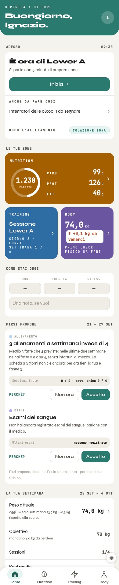

A sinistra la Home vera di oggi con la veste A, fotografata dal banco a 390 px con i dati di prova (domenica 4 ottobre, alle 9:30). A destra lo schizzo: in cima tre widget nello stile degli anelli Attività, delle barre della settimana e dei cerchi a batteria. I numeri sono gli stessi dei dati di prova. Solo dati che l'app ha già, nessuna lettura nuova, nessuna scrittura.

dayTotals, obiettivi da ST.TARGET;ST.trainLoggedSets), serie previste dalla seduta proposta (sedutaProposta()).kcal_avg) confrontata con la stessa fascia 90–110% che il quadro usa già per «giorno in obiettivo»: sotto il 90% è «Sotto», sopra il 110% è «Sopra». Non è una regola nuova, ma la parola oggi non esiste: va scritta.sessions_done / sessions_planned);weight_n);suppsTaken) contro quelli del giorno (suppsDelGiorno). Questo è l'unico conto nuovo: un semplice rapporto, da confermare.